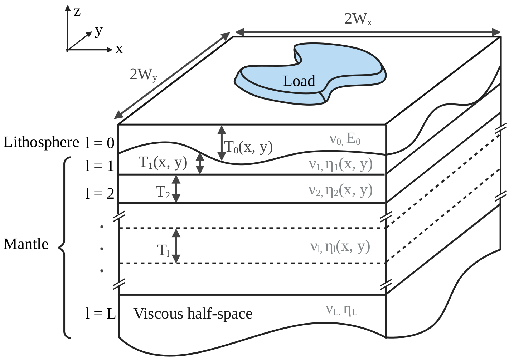

Tutorial
In this section, we will present some examples with idealised loads and solid-Earth parameters. This should give the user a basic understanding of FastIsostasy's basic functions.
3D ➡ 2D Earth
FastIsostasy relies on a (polar) stereographic projection. Let's first create Omega::ComputationDomain and visualise how this relates to a domain on a spherical Earth:
using CairoMakie, FastIsostasy
W = 3000e3 # (m) half-width of the domain Wx = Wy
n = 7 # implies an Nx x Ny grid with Nx = Ny = 2^n = 128.
Omega = ComputationDomain(W, n)
fig = Figure(size = (1600, 800), fontsize = 24)
axs = [Axis3(fig[1, j], title = ["Original grid", "Projected grid"][j]) for j in 1:2]
wireframe!(axs[1], Omega.X .* Omega.K, Omega.Y .* Omega.K,
Omega.R .* cos.(deg2rad.(Omega.Lat)), color = :gray10, linewidth = 0.1)
wireframe!(axs[2], Omega.X .* Omega.K, Omega.Y .* Omega.K,
Omega.null, color = :gray10, linewidth = 0.1)
for ax in axs
zlims!(ax, (0, 5e6))
hidedecorations!(ax)
hidespines!(ax)
end
fig
The distortion factor Omega.K is not only accessible but also accounted for in all the computations. The projection allows to treat the radially-layered, onion-like structure of the solid Earth as a superposition of horizontal layers. Furthermore, FastIsostasy reduces this 3D problem into a 2D problem by collapsing the depth dimension, mainly through the computation of an effective viscosity field that accounts for the superposition of layers with different viscosities. The user is required to provide the 3D information, which will then be used under the hood to compute the effective viscosity. This tutorial shows such an example.
We want to render a situation similar to the one depicted below:

Initializing a LayeredEarth with parameters corresponding to this situation automatically computes the conversion from a 3D to a 2D problem. Since we will compare our solution to an analytical one of a flat Earth, we exceptionally switch off the distortion correction. This can be simply executed by running:
Omega = ComputationDomain(W, n, correct_distortion = false)
c = PhysicalConstants(rho_litho = 0.0)
lv = [1e19, 1e21] # viscosity layers (Pa s)
lb = [88e3, 400e3] # depth of layer boundaries (m)
p = LayeredEarth(Omega, layer_viscosities = lv, layer_boundaries = lb)
extrema(p.effective_viscosity)As expected, the effective viscosity is a homogeneous field. It corresponds to a nonlinear mean of the layered values provided by the user. Note that we have set $\rho_{litho} = 0$ to prevent the lithosphere from contributing to the hydrostatic, upward force. This is made to comply with the later computed analytical solution, which assumes a purely elastic lithosphere that does not generate a hydrostatic upward force when displaced. In reality, this is arguably wrong and the default choice c = PhysicalConstants() therefore uses $\rho_{litho} = 2600 \, \mathrm{kg \, m^{-3}}$.
The next section shows how to use the now obtained p::LayeredEarth for actual GIA computation.
Simple load and geometry
We now apply a constant load, here a cylinder of ice with radius $R = 1000 \, \mathrm{km}$ and thickness $H = 1 \, \mathrm{km}$, over Omega::ComputationDomain introduced in LayeredEarth. To formulate the problem conviniently, we use FastIsoProblem, a struct containing the variables and options that are necessary to perform the integration over time. We can then simply apply solve!(fip::FastIsoProblem) to perform the integration of the ODE. Under the hood, the ODE is obtained from the PDE by applying a Fourier collocation scheme contained in lv_elva!. The integration is performed according to FastIsoProblem.diffeq::NamedTuple, which contains the algorithm and optionally tolerances, maximum iteration number... etc.
R = 1000e3 # ice disc radius (m)
H = 1e3 # ice disc thickness (m)
Hcylinder = uniform_ice_cylinder(Omega, R, H)
Hice = [zeros(Omega.Nx, Omega.Ny), Hcylinder, Hcylinder]
t_out = years2seconds.([0.0, 200.0, 600.0, 2000.0, 5000.0, 10_000.0, 50_000.0])
εt = 1e-8
pushfirst!(t_out, -εt)
t_Hice = [-εt, 0.0, t_out[end]]
fip = FastIsoProblem(Omega, c, p, t_out, t_Hice, Hice, output = "sparse")
solve!(fip)
function plot3D(fip, k_idx)
X, Y, out = Array(fip.Omega.X), Array(fip.Omega.Y), fip.out
zl = extrema(out.ue[end] + out.u[end])
fig = Figure(fontsize = 10)
for j in eachindex(k_idx)
ax = Axis3(fig[1, j])
u_tot = out.ue[k_idx[j]] + out.u[k_idx[j]]
surface!(ax, X, Y, u_tot, colormap = :cool)
wireframe!(ax, X, Y, u_tot, color = :black, linewidth = 0.1)
zlims!(ax, zl)
end
return fig
end
fig = plot3D(fip, [lastindex(t_out) ÷ 2, lastindex(t_out)])... and here goes the total displacement at $t = 50 \, \mathrm{kyr}$. You can now access the elastic and viscous displacement at time t_out[k] by respectively calling fip.out.ue[k] and fip.out.u[k]. For the present case, the latter can be compared to an analytic solution that is known for this particular case. Let's look at the accuracy of our numerical scheme over time by running following plotting commands:
fig = Figure()
ax = Axis(fig[1, 1])
cmap = cgrad(:jet, length(t_out), categorical = true)
ii, jj = Omega.Mx:Omega.Nx, Omega.My
x = Omega.X[ii, jj]
r = Omega.R[ii, jj]
for k in eachindex(t_out)
analytic_solution_r(r) = analytic_solution(r, t_out[k], c, p, H, R)
u_analytic = analytic_solution_r.(r)
u_numeric = fip.out.u[k][ii, jj]
lines!(ax, x, u_analytic, color = cmap[k], linewidth = 5,
label = L"$u_{ana}(t = %$(round(seconds2years(t_out[k]))) \, \mathrm{yr})$")
lines!(ax, x, u_numeric, color = cmap[k], linewidth = 5, linestyle = :dash,
label = L"$u_{num}(t = %$(round(seconds2years(t_out[k]))) \, \mathrm{yr})$")
end
axislegend(ax, position = :rb, nbanks = 2, patchsize = (50.0f0, 20.0f0))
figGPU support
For about $n \geq 7$, the present example can be computed even faster by using GPU parallelism. It could not represent less work from the user's perspective, as it boils down to calling ComputationDomain with an extra keyword argument:
Omega = ComputationDomain(W, n, use_cuda = true);
nothing #hideWe then pass Omega to a LayeredEarth and a FastIsoProblem, which we solve: that's it! For postprocessing, consider using reinit_structs_cpu.
For now only Nvidia GPUs are supported and there is no plan of extending this compatibility at this point.
Make your own time loop
As any high-level function, solve! has some limitations. An ice-sheet modeller typically wants to embed FastIsostasy within a time-stepping loop. This can be easily done by getting familiar with some intermediate-level functions like init, step! and write_out!:
Omega = ComputationDomain(3000e3, n)
p = LayeredEarth(Omega)
fip = FastIsoProblem(Omega, c, p, t_out, t_Hice, Hice, output = "sparse")
update_diagnostics!(fip.now.dudt, fip.now.u, fip, 0.0)
write_out!(fip.out, fip.now, 1)
ode = init(fip)
@inbounds for k in eachindex(fip.out.t)[2:end]
step!(fip, ode, (fip.out.t[k-1], fip.out.t[k]))
write_out!(fip.out, fip.now, k)
end
fig = plot3D(fip, [lastindex(t_out) ÷ 2, lastindex(t_out)])In case your Ice-Sheet model is programmed in julia, we highly recommend performing the coupling within the function updating the derivatives and let OrdinaryDiffEq.jl handle the rest.
step! does not support GPU computation so far. Make sure your model is initialized on CPU.
Using different backends
ELRA is a GIA model that is commonly used in ice-sheet modelling. For the vast majority of applications, it is less accurate than LV-ELVA without providing any significant speed up. However, it can be used by specifying adequate options:
p = LayeredEarth(Omega, tau = years2seconds(3e3))
opts = SolverOptions(deformation_model = :elra)
fip = FastIsoProblem(Omega, c, p, t_out, t_Hice, Hice, opts = opts, output = "sparse")
solve!(fip)
fig = plot3D(fip, [lastindex(t_out) ÷ 2, lastindex(t_out)])